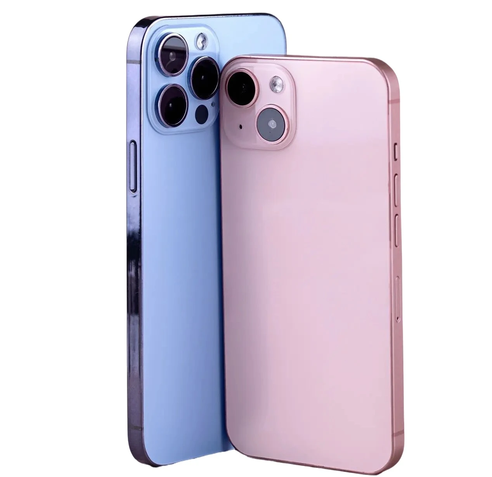

iphone 15 Pro
INNOVATIVE DESIGN — iPhone 15 features a durable color-infused glass and aluminum design. It’s splash, water, and dust resistant. The Ceramic Shield front is tougher than any smartphone glass. And the 6.1" Super Retina XDR display is up to 2x brighter in the sun compared to iPhone 14. 48MP MAIN CAMERA WITH 2X TELEPHOTO — The 48MP Main camera shoots in super-high resolution. So it’s easier than ever to take standout photos with amazing detail. The 2x optical-quality Telephoto lets you frame the perfect close-up.
